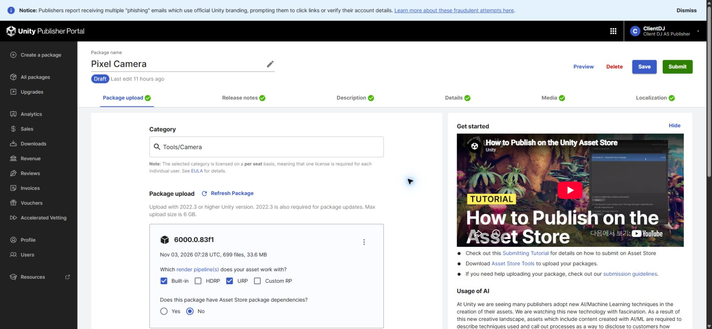
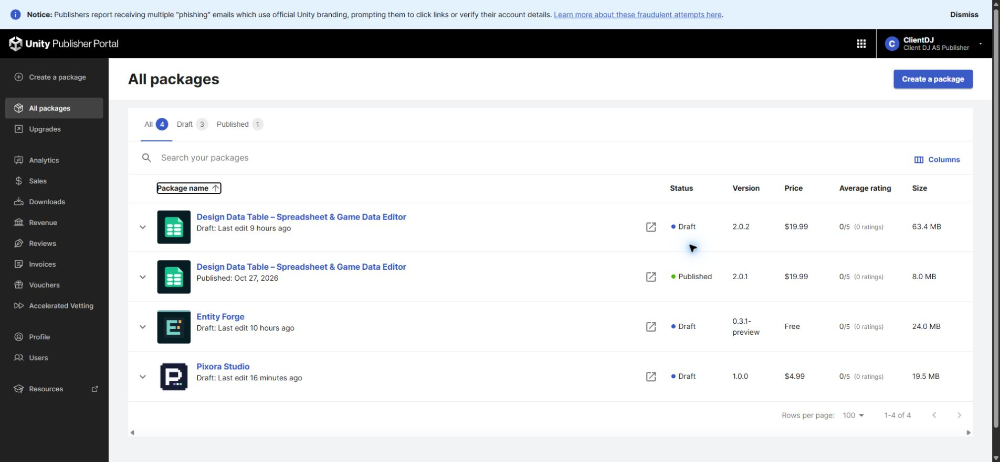

Tracefolio REPORTS & ISSUES
Tracefolio REPORTS & ISSUESPixora Studio 통합에 따른 Pixel Camera 별도 판매 초안 삭제
완료사용자의 영구 삭제 확인 후 Pixel Camera 별도 초안을 삭제했습니다. 새로고침 후 판매 항목4개와 Pixora Studio 보존을 확인했습니다.
작업 결과
별도 Pixel Camera0.6.1-preview 판매 초안(상품424618 / 초안1541562)을 영구 삭제했습니다. 전체 새로고침 후 목록에서 사라졌으며 Pixora Studio 초안은 유지됩니다.
변경 내용
적용 내용
판매자 포털의 별도 초안만 삭제했습니다. 프로젝트 내부 Pixel Camera 모듈·기존 소스·통합 패키지와 Pixora Studio 판매 초안은 삭제하지 않았습니다.

삭제 전에는 Pixel Camera 초안 상세에699파일·33.6MB 업로드가 표시됐습니다.

삭제 후 전체4개, 초안3개, 공개1개입니다. 삭제 전 목록의 동일 구도 캡처는 확보하지 못했고 되돌릴 수 없는 작업이므로 재현하지 않았습니다. 상세→목록의 상태 확인이며 같은 화면의 전후 시각 비교를 완료했다고 주장하지 않습니다.
검증
영구 삭제 직전 사용자 확인을 받았습니다. 삭제 확인창에서 해당 초안의 Delete를 실행한 뒤 All packages로 이동한 결과를 확인하고, 다시 전체 새로고침했습니다. Pixel Camera 행이 없고 Design Data Table 초안/공개, Entity Forge 초안, Pixora Studio 초안이 남아 있습니다. 삭제 결과.
Unity 공식 삭제 안내는 확인창에서 초안을 영구 삭제한다고 명시합니다. 이번에는 별도 초안만 삭제했고 통합 제품 최종 제출은 실행하지 않았습니다.
교훈 검토: 판매 항목 통합 시 원본 모듈 삭제와 별도 판매 초안 삭제를 구분하고 정확한 초안 ID를 확인합니다. 기존 승인·정확한 범위 확인 원칙과 중복되어 전역 지침 변경은 없습니다. 프로젝트 문서에 삭제된 별도 초안 ID를 기록했습니다.
남은 사항
이번 별도 판매 초안 삭제는 완료했습니다. Pixora Studio 통합 제품의 기존 미완료 QA·미디어·패키지 업로드·최종 제출은 별도 작업으로 유지합니다.
작업 시간
- 제안 시간: 대상 확인·삭제·저장 상태 확인3~5분
- 실제로 완료된 시간: 승인 후 실행 계측 시작2026-11-04 03:42:25 KST, 삭제·전체 새로고침 검증 완료03:42:48 KST(23초). 이전 대상 확인·영구 삭제 승인 대기와 이후 보고서 공개 배포는 별도입니다.
- XERJ: 미사용 — 코드 검색 불필요 — 판매자 포털 초안 삭제와 실제 목록 재조회만 수행